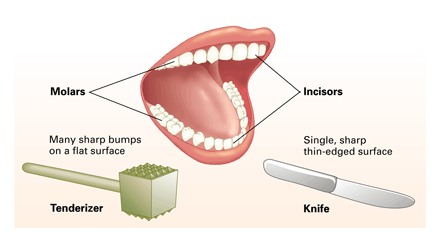
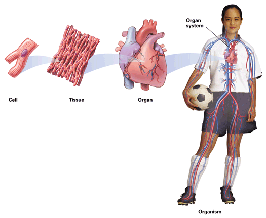
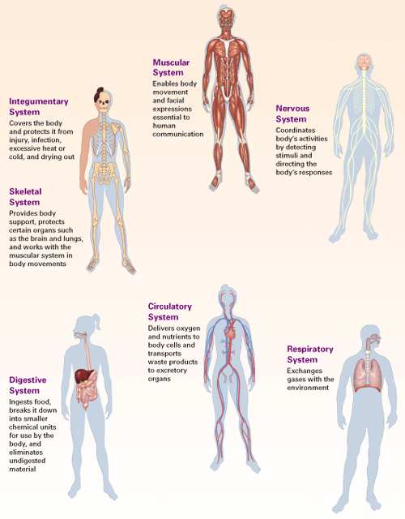
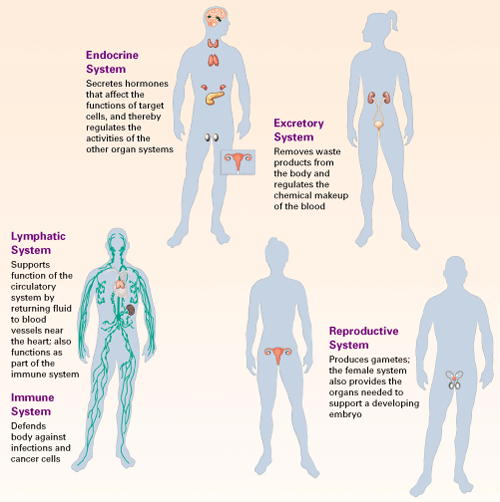

Objectives
- Relate anatomy and physiology.
- Identify the levels of structure in the human body.
Key Terms
How does your favorite band make good music? The drummer keeps rhythm, the singer provides the melody, and the guitarist holds it all together. Likewise, each organ system in your body has a unique role to play. All systems work together, allowing your body to function smoothly.
Anatomy and Physiology
A close look at a biological structure often provides clues about its function. Structures that look alike often have similar functions. For example, if you look at your teeth in a mirror, you'll see thin-edged, sharp teeth in front called incisors (Figure 27-1). Their shape may remind you of the sharp blade of a cutting tool, such as a knife. Indeed, the function of incisors is to cut through pieces of food. The teeth in the back of your mouth, molars, have many sharp bumps that resemble a meat tenderizer's hard, bumpy surface. Just as a chef pounds a tenderizer against a tough piece of meat to soften it before cooking, molars grind and mash food before it is swallowed.
|  |
Figure 27-1
Incisors and molars have different structures that fit their different functions. Molars have a bumpy surface that mashes food. Incisors have a sharp, thin edge that cuts food. |
The study of the structure of an organism and its parts is called anatomy. For example, the anatomy of your mouth reveals how many teeth you have, their shapes, and their position in your jaw. Physiology (fiz ee AWL uh jee) is the study of what structures do, and how they do it—in other words, their function. Studying how your jaw moves your teeth when you chew and how your teeth cut and mash your food is physiology. Knowing anatomy is important to understanding physiology. Keep this relationship between structure and function in mind as you begin your study of the human body systems.
Levels of Body Structure
As in other multicellular organisms, your body has several levels of organization. Figure 27-2 shows the structures that make up one system in your body, the circulatory system. The first level is the cell, such as a muscle cell in your heart. Each heart muscle cell is branched, allowing it to interlock with other surrounding heart muscle cells, much as jigsaw puzzle pieces fit together. This interlocking helps coordinate the actions of neighboring cells. Together, these cells form a muscle tissue. A tissue is a cooperating unit of many similar cells that perform a specific function. In this case, the tight organization of the muscle cells allows the muscle tissue to produce heartbeats that pump blood. In addition to muscle tissue, the other major types of tissue are epithelial, connective, and nervous tissue. You will learn about all four tissue types in the next section.
|  |
Figure 27-2
The smallest level of organization shown in this diagram is the cell. Cells working together make up a tissue, which in turn is part of an organ. Organs working together form the different organ systems that make up a whole organism. |
An organ consists of several tissues that together perform a specific task. For example, your heart is an organ composed of muscle and other tissues, such as nervous tissue, that together produce a pumping action. An organ system consists of multiple organs that together perform a vital body function. The organs of the circulatory system are the heart and blood vessels. Together, they constantly transport blood throughout the body.
The highest level of structure is the whole organism, in this case a human. Different organ systems work together, contributing to the successful function of the whole organism. For example, without oxygen supplied by the respiratory system and nutrients provided by the digestive system, the heart cannot pump blood and the circulatory system cannot function. Another example is the coordination of the nervous, muscular, and skeletal systems in moving parts of the body. Nerves stimulate muscles to contract, and the muscles in turn move the bones of the skeleton to which they are attached.
Figure 27-3 introduces the major functions and organs of 12 organ systems in the human body. The remainder of this unit will provide more details on these functions and the structures that make them possible.
|  |
|  |
Figure 27-3
This diagram shows 12 organ systems in the human body. Note the major organs that make up each system. |
Concept Check 27.1
1. Explain how anatomy and physiology are related.
2. List in order from smallest to largest the five levels of structure in the human body.
3. List 12 different organ systems in one column of a table. In the second column, state the major functions of each system.